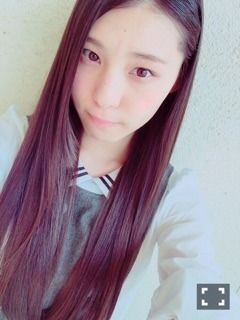
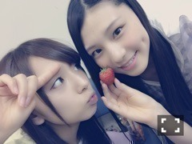
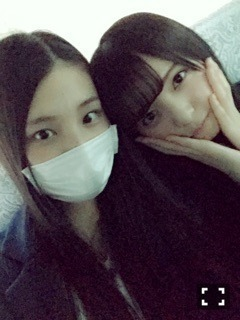
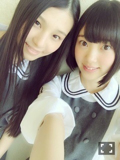

| 2015/05 11 Mon | みらいの選択_(．．*)vol.27 |
みなさんこんばんはー！
さがらいおりです！
12thはアンダーです！
そんなに落ち込んでいません！
でも悔しくないわけではありません！
また選抜に選ばれるように頑張ります！
選抜の中で見てきたことを
思い出して
またあの多忙な日々を過ごせるように
一生懸命努力します！
自分磨き頑張ります！
毛嫌いせずに
いおりのこと見てください！

いつも支えてくれてありがとう
それと、まいちゅん初選抜！
おめでとう！
2 期 1 人だけど頑張ってね～♪♪

忙し過ぎて体壊さないように
気を付けてね、、
疲れた時に猫背にならないように
気を付けてね、、
飛鳥ちゃんには
11 th期間大変お世話になりましたm(_ _)m

ちょっとでも不安なことは
ほとんど飛鳥ちゃんに聞いて
飛鳥ちゃんは全部答えてくれるし
教えてくれるし考えてくれました
ホントに頼りきりで、、
いつもありがとう
なかなか会えなくなるのは
寂しいです(；；)
生駒さんのセンターはずっと
もう一度見たいと思ってたので
とっても嬉しいです！
なんにも力になれないけど
生駒さんにもたくさんお世話になったので
影から支えたいです。
それから未央奈！
未央奈は
仕事が忙しい時に
｢いおりがいるから仕事に行くのが楽しみなの！｣
って言ってくれたことがあって
いおりも未央奈の存在が心強かったし
未央奈にも
たくさん頼ってたりしてて
申し訳ないな、って思ってたから
「いおりも少しだけ
未央奈の支えになってるのかな」
って思えてそれがすごい嬉しかった♡
最近はいっぱい話すし、
11 th一緒に頑張った仲だから
何かに悩んだりしたら
いつでも相談してね(´,,•ω•,,)♡

過去は過去
嬉しかったことも
楽しかったことも
悔しかったことも
悲しかったことも
過去です
もう過ぎました
少しでもたくさんの方に
応援してもらえるように
私、がんばります
i o r i .

コメント(462)
2015/05/11 21:24